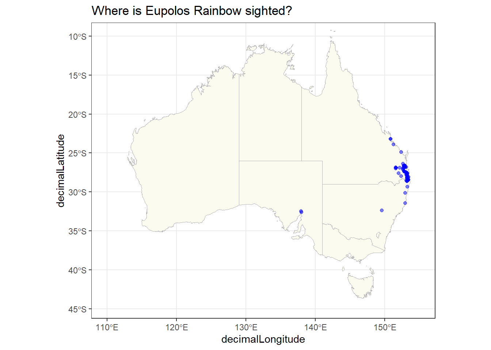

Genus Euoplos Rainbow, belonging to the family Idiopidae, is a fascinating group of armored trapdoor spiders endemic to Australia. First described by William Joseph Rainbow in 1914, this genus comprises 14 recognized species. These spiders typically range in size from 10 to 25 mm and are characterized by their heavily armored carapaces and opisthosomae. While their carapaces tend to be dark in color, their opisthosomae can display striking patterns and vibrant colors.
Euoplos spiders are nocturnal hunters, primarily active during the night, emerging from their burrows to capture prey. Their burrows, often constructed in sandy or loamy soil, feature a hinged lid that serves as both protection and a concealed trap for unsuspecting prey. They are versatile predators, preying on a variety of insects and invertebrates with their powerful fangs.
These spiders can be found in diverse habitats across Australia, including forests, woodlands, grasslands, and deserts. Their preference for dry, open habitats is particularly noteworthy.
Information about the population trends of Euoplos Rainbow is limited, largely due to the secretive nature of these spiders. Some species may face threats from habitat loss, degradation, and competition from introduced spider species, but more research is needed to determine their conservation status.
The previous group left fascinating analysis and insights on the sightings of the Golden Trapdoor Spider. The fact that the majority of the sightings were observed in East Australia, the collective decision of our group led us to use the tourism data for East Australia over the years to try and find out if any relationship exists between the sightings of the species and the traffic of tourists in the specified region. In this assignment, we will be subsetting the data to our desired region for analysis.
Data Cleaning
Comprehensive data cleaning was performed by the previous group and we found little reason to try and alter the code. The only addition made by our team was adding the cl22 variable which allowed us to observe the state where the sighting was observed.
Load raw data
galah_config(email ="jaysangani04@gmail.com")Euoplos_Rainbow <-galah_call() |>galah_identify("Euoplos Rainbow") |>atlas_occurrences()# Filter records based on date (reliable sightings after 1990)Euoplos_Rainbow <- Euoplos_Rainbow %>%filter(eventDate >=as.Date("1990-01-01"))save(Euoplos_Rainbow, file ="data-raw/Euoplos_Rainbow.rda")
Filter out unreliable sightings (BASIS_OF_RECORD_INVALID)
Euoplos_Rainbow_assert <-galah_call() |>galah_identify("Euoplos Rainbow") |>galah_select( group ="assertions") |>atlas_occurrences() %>%filter(BASIS_OF_RECORD_INVALID !="TRUE")Euoplos_Rainbow_event <-galah_call() |>galah_identify("Euoplos Rainbow") |>galah_select(cl22, basisOfRecord, group ="event") |>atlas_occurrences()
Convert eventDate to Date format without the time component
# Convert timezone-specific times to plain hour:minute:second formattimezone_format <-grepl("\\+[0-9]{2}:[0-9]{2}|Z", Euoplos_Rainbow_event$eventTime)Euoplos_Rainbow_event$eventTime[timezone_format] <-substr(Euoplos_Rainbow_event$eventTime[timezone_format], 1, 8)# For plain hour:minute, append ":00" to make it hour:minute:secondplain_time_format <-grepl("^[0-9]{2}:[0-9]{2}$", Euoplos_Rainbow_event$eventTime)Euoplos_Rainbow_event$eventTime[plain_time_format] <-paste0(Euoplos_Rainbow_event$eventTime[plain_time_format], ":00")
Perform merging and filtering
# Merging based on eventDateEuoplos_Rainbow_2 <-merge(Euoplos_Rainbow, Euoplos_Rainbow_event, by="eventDate", keep.all=TRUE)# Merging the result with Euoplos_Rainbow_assert based on recordIDEuoplos_Rainbow_3 <-merge(Euoplos_Rainbow_2, Euoplos_Rainbow_assert, by="recordID", keep.all=TRUE)# Convert 12-hour format to 24-hour formattwelve_hour_format <-grepl("[APM]{2}", Euoplos_Rainbow_event$eventTime, ignore.case=TRUE)Euoplos_Rainbow_event$eventTime[twelve_hour_format] <-format(strptime(Euoplos_Rainbow_event$eventTime[twelve_hour_format], format="%I:%M %p"), "%H:%M:%S")#converting time from AM/PM to HH:MM:SSconvert_time <-function(time) {if(grepl("AM|PM", time, ignore.case =TRUE)) {return(format(parse_date_time(time, "h:M%p"), "%H:%M:%S")) }return(time)}Euoplos_Rainbow_3$eventTime <-sapply(Euoplos_Rainbow_3$eventTime, convert_time)#selecting neccesory variablesEuoplos_Rainbow_3 <- Euoplos_Rainbow_3 %>%select(decimalLatitude, decimalLongitude, eventDate,scientificName, taxonConceptID, recordID, dataResourceName, occurrenceStatus, BASIS_OF_RECORD_INVALID, eventTime, basisOfRecord, cl22) %>%rename(State = cl22)#removing duplicates from the datasetEuoplos_Rainbow_combined <- Euoplos_Rainbow_3 %>%distinct()Euoplos_Rainbow_combined$eventTime <- hms::as_hms(Euoplos_Rainbow_combined$eventTime)final_Euoplos_Rainbow <- Euoplos_Rainbow_combined %>%filter(basisOfRecord =="HUMAN_OBSERVATION")
We decided to keep the data description of the Golden Trapdoor Spider to allow the audience to get a feel of the data used for the species to allow some familiarity as we perform our tasks later on.
Description of Variables in the `final_Euoplos_Rainbow` Dataset
Variable_Name
Data_Type
Description
decimalLatitude
Double
Latitude at which the sighting was recorded.
decimalLongitude
Double
Longitude at which the sighting was recorded.
eventDate
Date
The date when the sighting occurred.
scientificName
Character
The scientific name of the species; consistently labeled as 'Euoplos rainbow'.
taxonConceptID
Character
A unique URL that redirects to the specific taxonomy concept on biodiversity.org.au.
recordID
Character
A distinct identifier for every record in the dataset.
dataResourceName
Character
The title of the institution or data resource provider that collected the data.
occurrenceStatus
Character
Denotes the status of the sighting, with a common value being 'PRESENT'.
BASIS_OF_RECORD_INVALID
Logical
A binary marker indicating the validity of the record (TRUE/FALSE).
eventTime
Time
The precise time the event or sighting took place. Several records may have this detail omitted ('NA').
basisOfRecord
Character
Filter to only HUMAN_OBSERVATION value to ensure all data is wild sightings, original variable also include value of PRESERVED_SPECIMEN
cl22
Character
The Australian State where the sighting was observed
Note
The Euoplos_Rainbow_combined dataset encapsulates 1,042 entries and is comprised of 12 variables. The data is derived from multiple sources, as can be discerned from the distinct dataResourceName entries. The main contributor appears to be the Western Australian Museum.
To ensure the dataset’s accuracy and relevance, several processing and cleaning steps were executed:
Filtering by Date: Only sightings post-1990 were considered to ensure the relevancy and reliability of the records.
Validity Check: Entries that were deemed unreliable (marked as BASIS_OF_RECORD_INVALID) were filtered out to maintain data integrity.
Date Formatting: The eventDate variable was converted to a standard Date format for uniformity.
Time Formatting: Timezone-specific timestamps were adjusted to a standardized hour:minute:second format. Any 12-hour formatted times were converted to a 24-hour format for consistency.
Merging Data: Multiple datasets were merged based on shared variables like eventDate and recordID to create a comprehensive dataset.
Removing Duplicates: Duplicate entries were identified and removed, ensuring each record in the dataset is unique.
Saving Dataset: After cleaning and formatting, the dataset was saved as an R object to ensure ease of access and repeatability of the analysis.
The dataset was sourced using the galah package in R, which interfaces with the Atlas of Living Australia (ALA). The ALA platform, available at Atlas of Living Australia, served as the primary source of the raw data.
For the analysis in R, libraries such as tidyverse, galah, and lubridate were employed. The galah library was particularly crucial for sourcing the data directly from ALA, while lubridate was instrumental in managing date and time fields. The tidyverse collection of packages enabled data manipulation, cleaning, and visualization.
Before proceeding with any advanced analysis, potential users of this dataset should always check for missing values, outliers, or other anomalies that might affect the results. Given the geospatial nature of the data, considerations for spatial analyses or visualizations could also be relevant.
Weather data
Note
The weather data was useful to allow us to get a feel of the areas or regions where most of the sightings were observed. We begin first by checking the total sightings throughout Australia, followed by areas where most sightings occurred using the weather data.
Most sightings occur in the Eastern Australia

Figure 2: All sightings on Australia map
Note
As depicted in Figure 2, the expectation that most sightings would occur in Eastern Australia has been confirmed, with the majority concentrated in Queensland and New South Wales, specifically around Brisbane and the Gold Coast. Notably, there have been two natural observations of Euoplos Rainbow in South Australia.
Figure 3: Weather stations with 4 groups on map
Note
As shown in Figure 3, the previous group divided the majority of Eastern Australia sightings into four distinct clusters and then matched each cluster with the nearest weather station. Any remaining sightings were categorized under the “Other” group. Moreover, for Group 1 through Group 4, the corresponding weather stations are Maroochydore Aero, Brisbane, Logan City Water Treatment, and Murwillumbah (Bray Park), respectively.
Note
Moving on, the previous group had individually narrowed down the year range for each weather station, focusing on the periods when the majority of sightings occurred (useful for our group). “This step is essential to ensure that weather-related data, such as precipitation, maximum temperature, and minimum temperature, are relevant to the analysis” as claimed by the previous group. However, the weather itself in essence was not of any requirement for us which led to a motive to not make use of the temperature and precipitation information. The next step however proved to be the most useful for us where they claimed they “Identified the respective cluster assigned to each weather station, combined the relevant data sets, and utilized line plots to visually depict the years when sightings were recorded for each specific weather station.”
Figure 4: Year range where most sightings occur for each weather station
Note
The previous team had noted that “As illustrated in Figure 4 above, the primary sightings took place during the following periods: Maroochydore station from 2016 to 2023, Brisbane stations from 2020 to 2023, Logan City Water Treatment station from 2020 to 2023, and Murwillumbah station from 2018 to 2023, with a noticeable gap between 2019 and 2022. Consequently, our approach will involve filtering the data for all four weather stations based on these specific year ranges and subsequently performing a left join with the Euoplos Rainbow dataset.”
For our interests, however, we realized that the Maroochydore Aero weather station had the most number of sightings as compared to the rest of the stations. Thus, we came to a conclusion to use Maroochydore as the region for our tourism analysis and ecotourism analysis.
Subsetting the Tourism Data
Subset the tourism data for Maroochydore
#reading the SA2 regionsaus_map <-read_sf(here::here("data/SA2_2021_AUST_SHP_GDA2020/SA2_2021_AUST_GDA2020.shp")) %>%select("SA2_NAME21", "STE_NAME21", "geometry") %>%rename(Region = SA2_NAME21,State = STE_NAME21)#joining SA2 regions with tourism data settourist_filtered <-left_join(tourism, aus_map, by =c("Region")) %>%filter(Region %in%"Maroochydore - Kuluin") %>%filter(Purpose =="Holiday") %>%filter(Trips !=0.00) %>%mutate(Trips =round(Trips *1000)) %>%mutate(Year =year(Quarter)) %>%filter(Year >=2015) #adding a new variable quarterquarter_merged <- final_Euoplos_Rainbow %>%mutate(Quarter =yearquarter(eventDate) ) %>%select("decimalLatitude", "decimalLongitude", "eventDate", "occurrenceStatus", "eventTime", "State", "Quarter")# Joining the data to the sightings datasetwrangled_data <-left_join(quarter_merged, tourist_filtered, by =c("Quarter", "State")) %>%select("Quarter", "Region", "State", "geometry", "decimalLatitude", "decimalLongitude","eventDate", "eventTime", "Purpose", "Trips" , "occurrenceStatus") %>%filter(Trips !=0.00) region_subset <- wrangled_data %>%filter(Region %in%"Maroochydore - Kuluin") %>%filter(Purpose =="Holiday") %>%mutate(occurrenceStatus =ifelse(occurrenceStatus =="PRESENT", 1, occurrenceStatus))region_subset <- region_subset %>%mutate(Region =case_when( Region =="Maroochydore - Kuluin"~"Maroochydore")) %>%group_by(Quarter, Region, State) %>%summarize(Trips =sum(Trips))region_temporal <- region_subset %>%mutate(Year =year(Quarter)) %>%group_by(Year, Quarter, Region) %>%summarize(Trips =sum(Trips))region_quarter <- region_subset %>%mutate(Year =year(Quarter),Quar =quarter(Quarter)) %>%group_by(Year, Quar, Region) %>%summarize(Trips =sum(Trips))
Figure 5: Tourism Patterns Across Recent Years Table
Note
The table allows for sorting and filtering required across the number of trips to Maroochydore over the years.
Figure 6: Tourism Patterns Across Recent Years
Figure 7: Tourism Patterns Across Quarters
Note
The figures Figure 6 and Figure 7 above provide insights into the number of trips; yearly and quarterly. Here’s a more detailed analysis:
1.) Yearly: Tourism in Maroochydore has been consistently observed since 2016, with an increasing trend in the number of trips since 2020 as the smooth loess method confirms. Notable patterns in the data are observed:
After the second quarter of 2020, there was a significant surge in tourism resulting in several peaks and an increasing trend. The series of crests and troughs signal the element of seasonality present with most peaks observed the second and third quarter of each year while the first and fourth quarters observed series of troughs. Moreover, the shape of the plot depicts presence of seasonality in tourism for Maroochydore.
2.) Quarterly: A detailed look in the quarterly plot shows absence of data for multiple quarters in their respective years. However, it still confirms most peaks are observed in the second and third quarters of the years. The absence of more information for Maroochydore is a data limitation.
The plot illustrates the quarterly pattern of tourism over recent quarters from 2016 to 2022. In fact, the tourism is showing a consistent increasing trend throughout. Interestingly, the trips always exceeded threshold of 5M. However, there was a slight drop in the number of trips in the first quarter of 2020 when COVID-19 was at its peak but this pandemic could not stop people from enjoying their life. Q3 2020 soon saw a rise in the domestic trips despite lockdown.
The reasons behind these trends in tourism may include various factors such as seasonal variations, regional events, economic factors, or shifts in travel preferences. Further analysis and domain-specific knowledge may be necessary to better understand these patterns.
EcoTourism Analysis
Figure 8: Regression Plot
Figure 8 uses the simple regression method to show the association between Sightings and Trips. For this analysis, we considered Sightings as a Response Variable and Tourism as an Explanatory Variable meaning we are using Tourism data to predict the values of spider sightings. It is evident from the above graph that there is no association between two variables. I do not believe that Sightings and Tourism share any significant relationship.
Lets drill further using Hypothesis Test to check the validity of our assumption.
term
estimate
std.error
statistic
p.value
(Intercept)
133883.952
13859.959
9.659766
0.0000000
sightings
1293.086
675.428
1.914469
0.0595342
H0 : There exists a linear association between Tourism and Spider Sightings.
α : 0.05 (Industry Standard)
p-value : 1.249197^{-14}, 0.0595342 (Calculated)
Note
Our Hypothesis analysis provides strong evidence that there is no association between the Golden Trapdoor Spider and tourism. The extremely small p-values, though not exactly zero, strongly suggest that the observed results are highly unlikely to have occurred by random chance. Consequently, we can confidently reject the null hypothesis implying the lack of any significant relationship between the presence of the Golden Trapdoor Spider and tourism.
Since the p-value < α, we reject the null hypothesis and conclude that there is insufficient evidence that there is a linear association between the Tourism and Spider Sightings.
We can also find the correlation between sightings and travel using the cor function. The output shows the positive correlation being very weak at a value of 0.2200899 between the two variables. This means that the two variables have a very slight tendency to move in the same direction, but the relationship is not strong or significant.
Figure 9: Residue Plot
Figure 9 shows that there is weak relationship between travel and tourism.
Key Takeaways
There is evidence of seasonality in tourism in Maroochydale.
There is an increasing trend of tourists visiting Maroochydale since 2020.
There exists no relationship between tourism and sightings due to a very slight correlation; not enough to agree there is a relationship.
It seems that these spiders are not a big fan of human beings. In fact, their sightings remained all low till 2020 until COVID-19 which in turn caused a burst in their sightings.
References
Credit goes to the previous team who spent time and effort on their assignment and left useful analysis for us to carry forward.
Australian Faunal Directory. (n.d.). Euoplos. https://biodiversity.org.au/afd/taxa/Euoplos
Atlas of Living Australia. (n.d.). Euoplos. https://bie.ala.org.au/species/https://biodiversity.org.au/afd/taxa/1b5cd7fc-fed7-4788-ac39-b33cafc7bbb4
Australian Spiders in Colour. (n.d.). Spider Identification. https://www.termite.com.au/spider-identification.html
Find-a-spider Guide. (n.d.). A Photographic Guide to Australian Spiders. http://www.findaspider.org.au/find/spiders/409.htm
Package Citation
tidyverse
Wickham H, Averick M, Bryan J, Chang W, McGowan LD, François R, Grolemund G, Hayes A, Henry L, Hester J, Kuhn M, Pedersen TL, Miller E, Bache SM, Müller K, Ooms J, Robinson D, Seidel DP, Spinu V, Takahashi K, Vaughan D, Wilke C, Woo K, Yutani H (2019). “Welcome to the tidyverse.” Journal of Open Source Software, 4(43), 1686. doi: 10.21105/joss.01686 (URL: https://doi.org/10.21105/joss.01686).
galah
Westgate M, Stevenson M, Kellie D, Newman P (2023). galah: Atlas of Living Australia (ALA) Data and Resources in R. R package version 1.5.2, <URL: https://CRAN.R-project.org/package=galah>.
Scott Chamberlain and Daniel Hocking (2023). rnoaa: ‘NOAA’ Weather Data from R. R package version 1.4.0. https://CRAN.R-project.org/package=rnoaa
lubridate
Garrett Grolemund, Hadley Wickham (2011). Dates and Times Made Easy with lubridate. Journal of Statistical Software, 40(3), 1-25. URL https://www.jstatsoft.org/v40/i03/.
ozmaps
Michael Sumner (2021). ozmaps: Australia Maps. R package version 0.4.5. https://CRAN.R-project.org/package=ozmaps
patchwork
Thomas Lin Pedersen (2023). patchwork: The Composer of Plots. R package version 1.1.3. https://CRAN.R-project.org/package=patchwork
ggrepel
Kamil Slowikowski (2023). ggrepel: Automatically Position Non-Overlapping Text Labels with ‘ggplot2’. R package version 0.9.3. https://CRAN.R-project.org/package=ggrepel
colorspace
Zeileis A, Fisher JC, Hornik K, Ihaka R, McWhite CD, Murrell P, Stauffer R, Wilke CO (2020). “colorspace: A Toolbox for Manipulating and Assessing Colors and Palettes.” Journal of Statistical Software, 96(1), 1-49. doi: 10.18637/jss.v096.i01 (URL: https://doi.org/10.18637/jss.v096.i01).
plotly
C. Sievert. Interactive Web-Based Data Visualization with R, plotly, and shiny. Chapman and Hall/CRC Florida, 2020.
kableExtra
Hao Zhu (2021). kableExtra: Construct Complex Table with ‘kable’ and Pipe Syntax. R package version 1.3.4. https://CRAN.R-project.org/package=kableExtra
sf
Pebesma, E., & Bivand, R. (2023). Spatial Data Science: With Applications in R. Chapman and Hall/CRC. https://doi.org/10.1201/9780429459016
Pebesma, E., 2018. Simple Features for R: Standardized Support for Spatial Vector Data. The R Journal 10 (1), 439-446, https://doi.org/10.32614/RJ-2018-009
tsibble
Wang, E, D Cook, and RJ Hyndman (2020). A new tidy data structure to support exploration and modeling of temporal data, Journal of Computational and Graphical Statistics, 29:3, 466-478, doi:10.1080/10618600.2019.1695624.